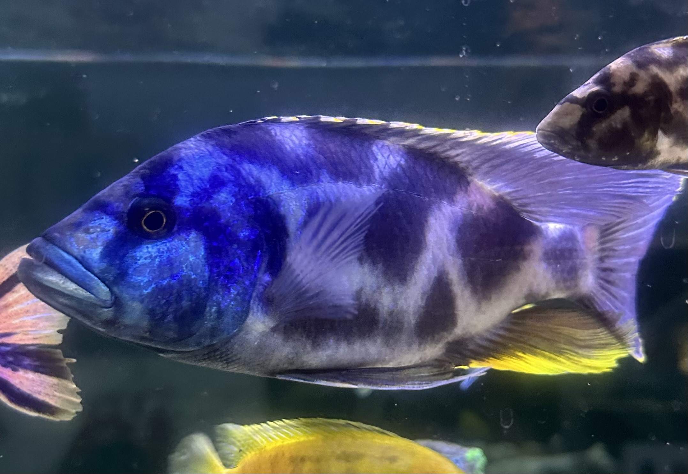

Available Fish

Blue Livingstonii
Available now - £5 each

Yellow Labs
Growing out - Reserve now

OB Cichlids
Expected soon
Our Breeding Setup
We use a modular tank system with clean water cycling and natural filtration through aquaponics. Each breeding pair is given a dedicated tank to ensure quality offspring and optimal health.
About Us
We are a family-run breeder in the UK, passionate about African cichlids. Our goal is to produce vibrant, healthy fish raised in a loving environment. From tank care to feeding routines, we involve our children in every part of the process.
Contact Us
Email: info@finaticsaquatics.com
WhatsApp: 07XXX XXXXXX
Follow us on Facebook and Instagram